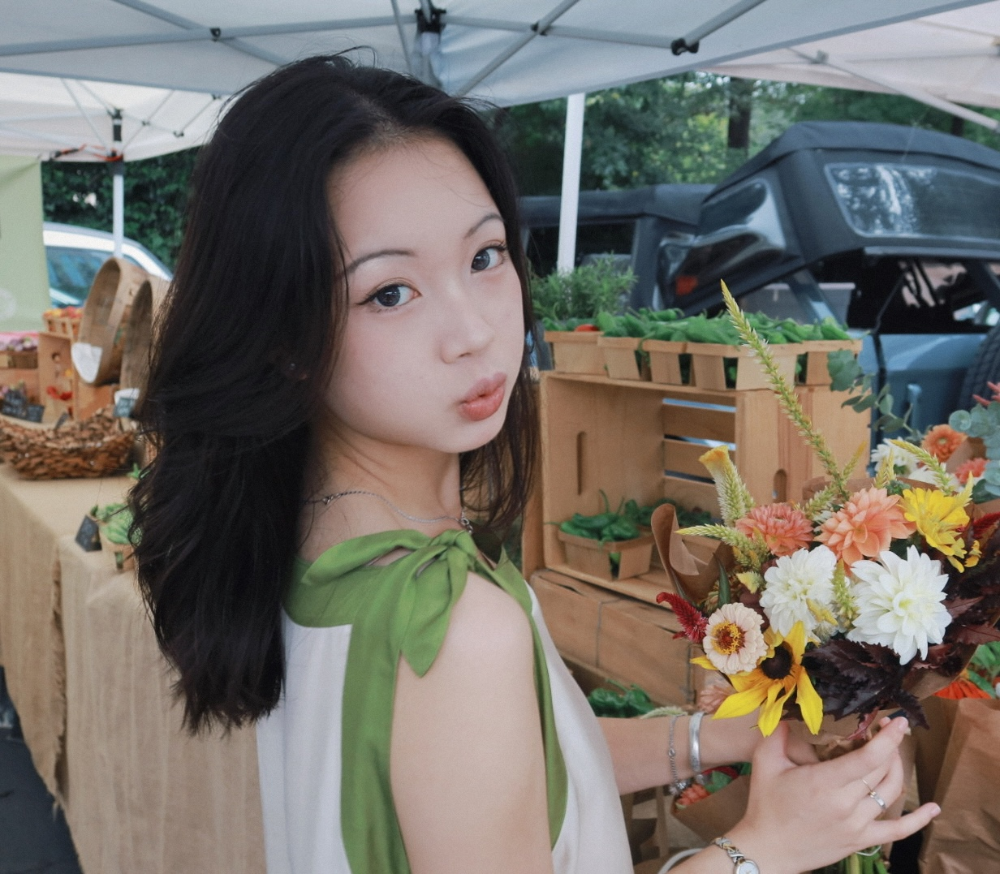

Hi, I’m Xinyue. An engineer who turns ideas into products, from the ground up.
Now @ Mercury | Prev. @ Datadog & JPMorgan Chase
Experience
Seven roles across startups, fintech, SaaS and research.
Full résumé ↗Hi, nice to meet you!
I’ve always enjoyed building things, from DIY projects, graphic design and animation to robotics and 3D modeling. Those experiences are what sparked my interest in software engineering.
Software lets me do everything I enjoy in one place: brainstorming an idea, designing how it should feel, and building it until it’s real and useful to someone. Watching an idea turn into something with real impact gives me a dopamine rush I never get tired of, and chasing that feeling is what keeps me building.
Making things has always been my thing. Away from the screen, I love pottery, knitting and stay active through running and swimming. Before any of that, I spent years as a Division II swimmer in China, training under one of Olympian Sun Yang’s coaches, which gave me the grit I still bring to hard problems: keep showing up, keep iterating, and don’t quit when it gets hard.
Today, I’m focused on fast-paced environments that aim to create real impact, building products from 0 to 1 and seeing my work land with the people who use it.
